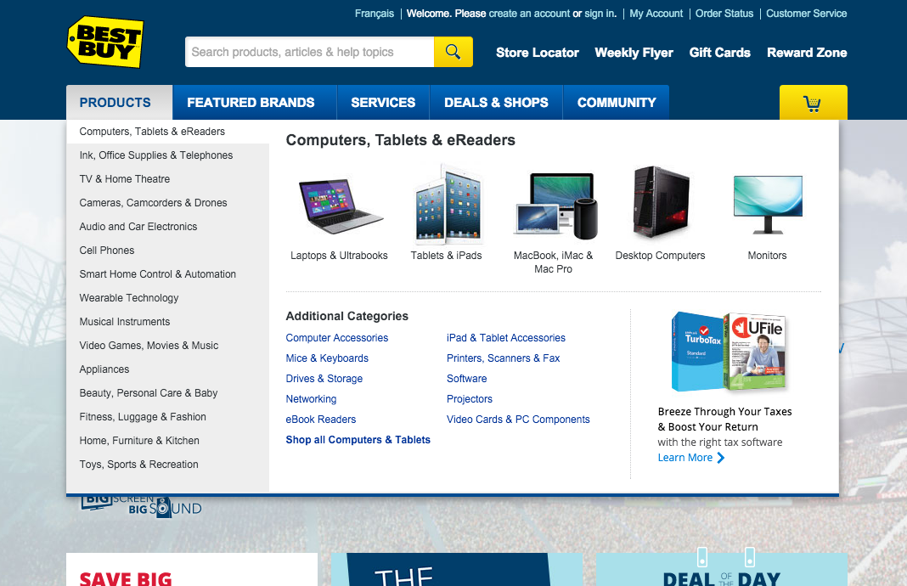
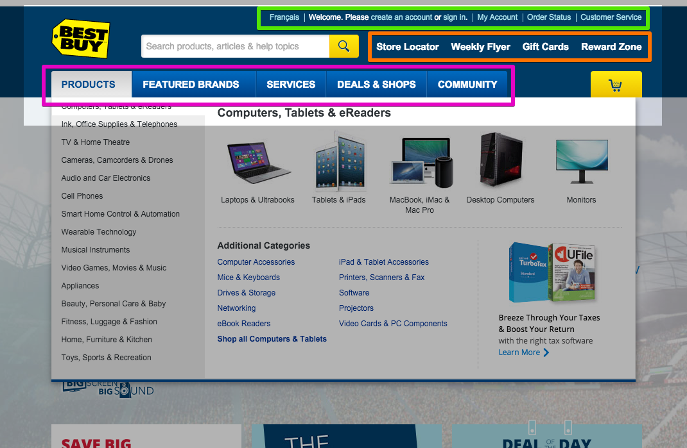
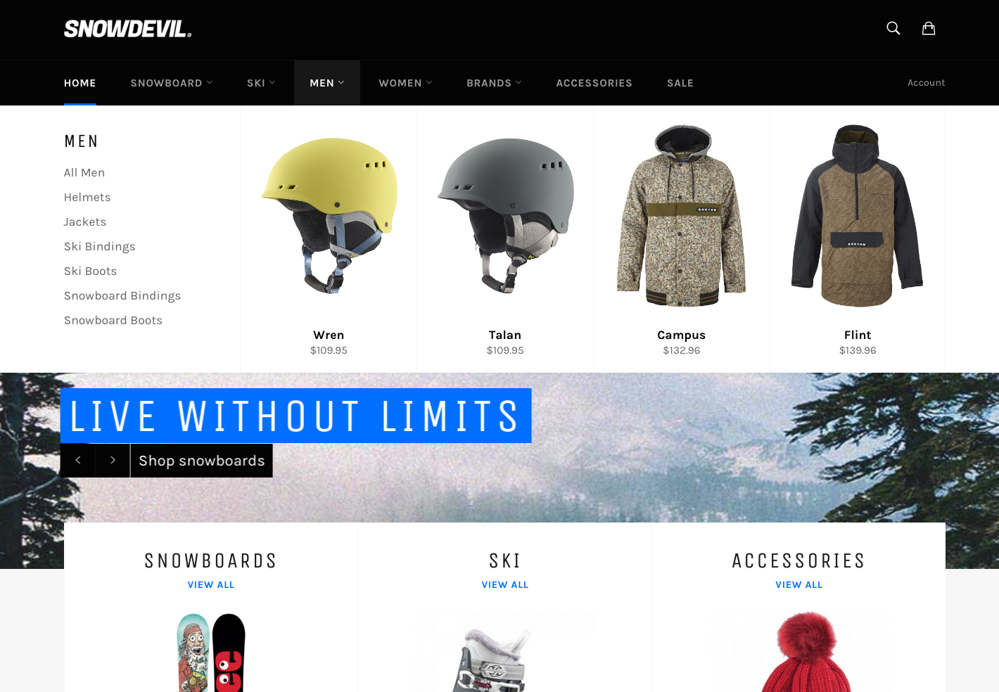
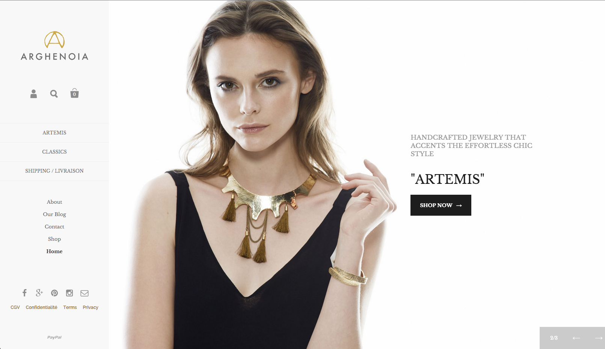
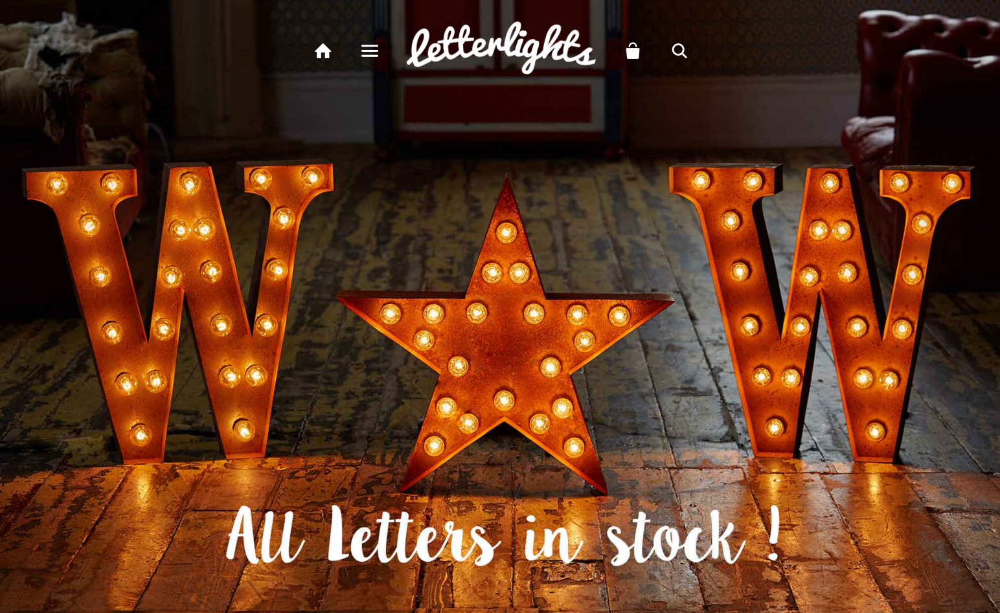
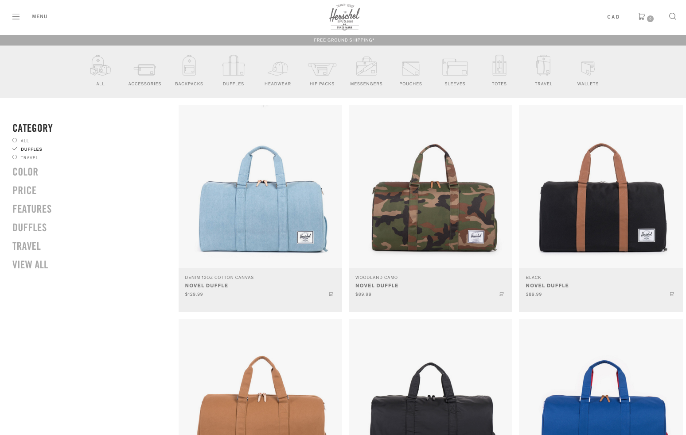
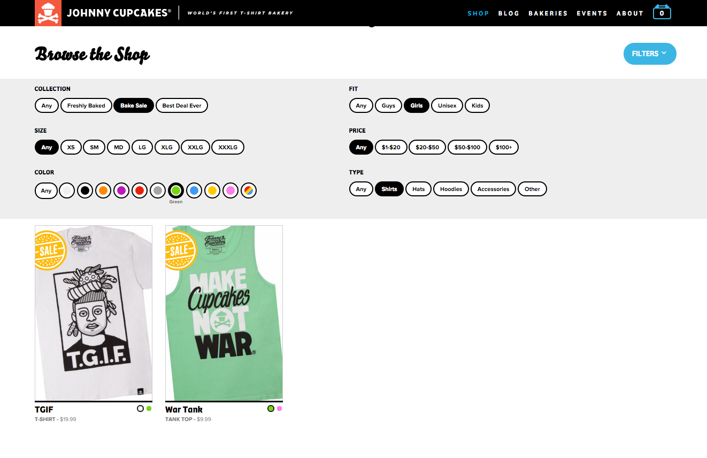
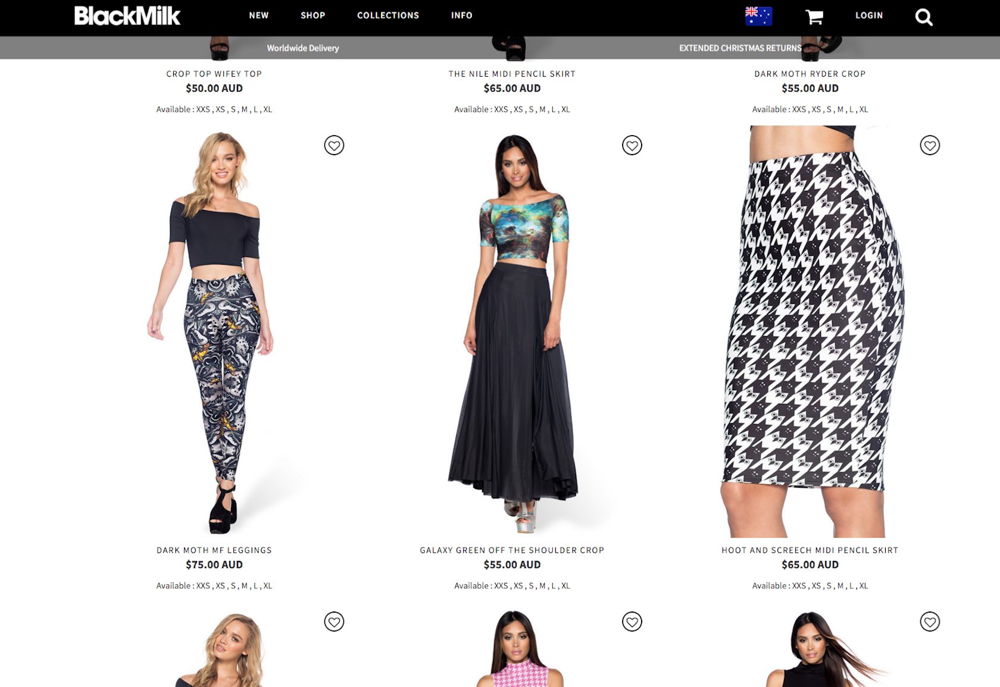
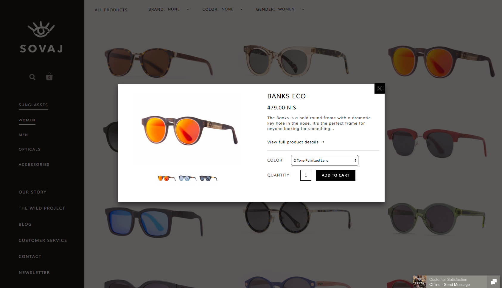
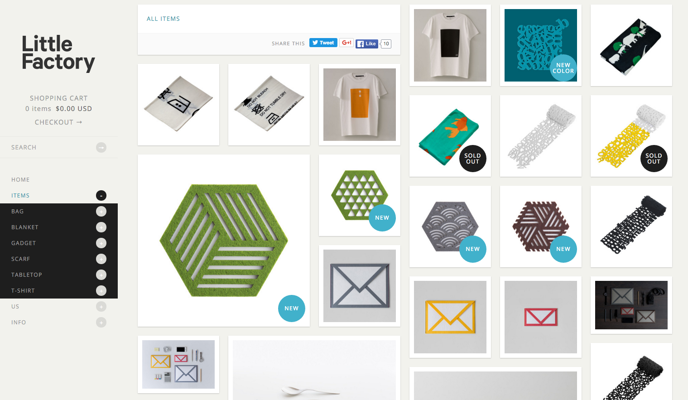

Building with Shopify
Intro to Liquid and Theming
Created by Nathan Ferguson / @NathanPJF
Agenda
Theme development in Shopify
Design and best practice for commerce sites
An introduction to Liquid
Demonstrations, code samples
Workflow, GitHub, Tools
Where do I go from here?
Design for ecommerce
Objectives and execution
Not a presentation on how on web design. I won't be talking about patterns or
recommending color palettes. I will talk about more fundamental considerations
about designing and developing web sites meant to be storefronts.
Static vs Transactional
Does your website exist to just provide information ?
Or are you trying to get visitors to actually do something ?
Static could also be considered "informational".
Does your website exist to provide
information, or is the website supposed to make some actually interact with it?
Navigation
People need to navigate your site and you need to make it easy .
Problem: What does "easy" actually mean?
Small number of links?
Lots of links with sub-navigation?
Clear language?
Use of imagery and icons?
Does "easy" mean there's only a few options presented?
That there's a lot of filtering presented?
Are you writing the names of links in a way people understand?

If we look at Best Buy's navigation, would you say this is "easy"?
Well, it depends on what TYPE of store you have. If you have a store
with very large inventory, this may be the appropriate type of navigation.
It needs to be "easy" to navigate all the product types and drill down to
the make and model of the item you're loking for.
Note: There's more than one navigation on a page. I count three main navs.

Green: Navigation focused on customer accounts and those who placed orders already
Orange: A navigation for what we can assume Best Buy has determined what are the top
actions for visitors coming to the site.
Pink: The navigation for products and services
Important: You don't need to dump all your navigation under one hamburger menu.
Break it up based on action.
Best Buy is bit of an extreme example though.

Use meganav dropdowns to show prodcuts. Give a couple product categories.

arghenoia-shop.com
Simpler navigation. You don't have to stick it at the top - everyone
does that, that's boring.
Different weights of links communicate a bit of hierarchy.
The stuff they want you to do is in all caps.
Less frequented links are in lower case.
And then you have account and cart icons for navigation.

letterlights.co.uk
Carefule on using just icons for navigation. It might not be clear
to people how to navigate your site if you are just going to rely
on icons.
Careful with icons...
What will this link you to?
"A user’s understanding of an icon is based on previous experience .
Due to the absence of a standard usage for most icons, text labels are
necessary to communicate the meaning and reduce ambiguity."
nngroup.com/articles/icon-usability
Link to: Contact? Account signup? Portoflio?
Collections
Show off your stuff! But how much do you show?
Price
Name
Options - colors, sizes
Availability - low stock, sold out
Anything else?
You can show all these items. Anytinh else?
What about review scores? If on sale, show how much you're saving.
Product stamps of approval - As seen on TV! Or some official brand.

shop.herschelsupply.ca
Prett basic grid display. As far as the collection goes this is standard.
Price, name, some filtering. Note: icon menu but has text labels.

johnnycupcakes.com
I want see all Girls shirts than come in green and are in the "Bake Sale" collection.
New in the grd: This option here where we can see different colors the same product
is available in.
Collections
What else can our collection page do for us?
Be more interactive - show me more pictures!
Lead to cart faster - save me clicks!
Be more visually diverse - I'm sick of boxes in rows!
You can show all these items. Anything else?
What about review scores? If on sale, show how much you're saving.
Product stamps of approval - As seen on TV! Or some official brand.

blackmilkclothing.com
In addition to providing more information about sizes, mousing over an
image will show a close up of the prodcut.

sovajlife.com
There's actually no product information at all until I click on a product.
Then it's a quick view with a straight add to cart. I have the option of
going to the "full product dertails", but I could just as easily go back to browsing.

littlefactory.com
This effect is often called masonry. Not everything has to be a clean grid.
What else do we need?
give a lit of common pages after asking group for they'd expect.
Be more interactive - show me more pictures!
Lead to cart faster - save me clicks!
Be more visually diverse - I'm sick of boxes in rows!
I'm not going to go into detail about these
Often overlooked pages
account, search, 404... show some 404 ones. Shop Jeen
Be more interactive - show me more pictures!
Lead to cart faster - save me clicks!
Be more visually diverse - I'm sick of boxes in rows!
I'm not going to go into detail about these
Introduction to Liquid
Theme templating language
... Finish this section with a modification to Venture that changes
the product image on however. Going to use HTML and jQuery
More advanced customizations
%@&# gets real
... Show Suzy Q cart... that's not on a cart page?!
Workflow and tools
Let's up your development game
Where to go now
Resources and next steps